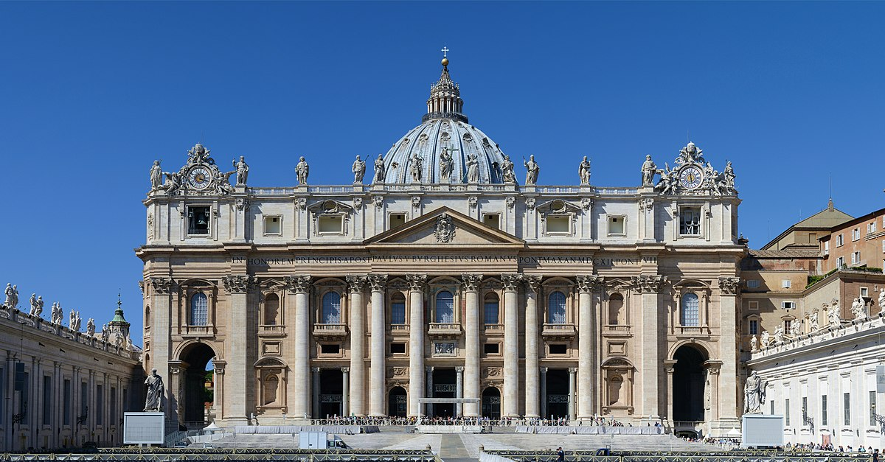

Monument extraordinaire qui accueillait les combats de gladiateurs autrefois, le Colisée remonte à l’an 72. L’amphithéâtre Flavien (c’est aussi comme ça qu’on l’appelle) a été construit pour accueillir un public pouvant aller jusqu’à 50.000 personnes. Le site, qui fut le théâtre de nombreuses morts horribles, est un lieu historique et une étape incontournable pour tout amateur d’Histoire et d’architecture. Très prisé par les touristes, le Colisée défit le temps et a notamment inspiré le film Gladiator. Il est aussi considéré comme le plus grand amphithéâtre de l’Empire romain au monde : sans nul doute donc, il est une référence pour visiter Rome.
Comment envisager de visiter Rome sans découvrir le Vatican ? Même si vous n’êtes pas croyants, allez jeter un œil sur la Place Saint-Pierre pour admirer les colonnes et la Basilica San Pietro (Basilique Saint-Pierre). À l’intérieur, vous pourrez admirer la Chapelle Sixtine et surtout la fresque du plafond de la chapelle, peinte par Michel-Ange entre 1508 et 1512. Vous remarquerez la scène de La Création d’Adam a acquis une portée universelle. Les musées du Vatican sont également à visiter.
Si vous souhaitez revenir dans la Ville Eternelle après votre séjour, il n’y a pas de mal à forcer le destin en allant visiter la légendaire Fontaine de Trevi. En plus d’exaucer les vœux de ceux qui jettent une pièce à l’intérieur, la « Fontana di Trevi » est un vrai joyau de la fin de la période baroque ; elle attire tous les regards.
La Basilique Saint Pierre de Rome, est située au Vatican, dans l'Ouest de la ville. Elle est l'église principale du Catholicisme, son centre spirituel et aussi la plus grande. A noter qu'elle n'est pas la cathédrale de Rome puisque c'est Saint Jean de Latran qui assure cette fonction. Son architecture, sa beauté et sa richesse en font l'une des étapes incontournables d'un séjour à Rome.
des places les plus connues de Rome et qui offre une très belle perspective. Un lieu incontournable, qui attire énormément de monde venu se reposer sur les marches reliant la piazza di Spagna à l'église de la Trinité des Monts.